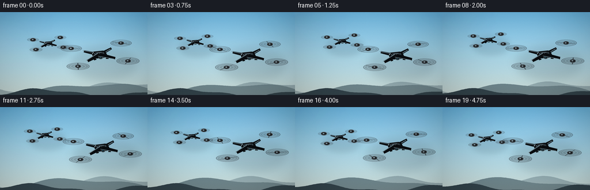
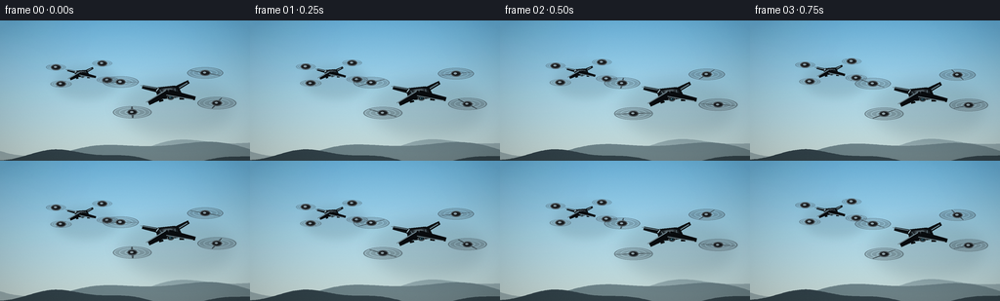

CODING AGENTS AS PIXEL WORLD MODELS
traex/DeepSeek-V4.1-Flash · instance_preservation_0042
点击播放 · 原生 RGB 像素
逐轮保存的候选
回放视频、检查图与代码变化。
每份候选均可单独播放。实际图片检查记录在下方工具轨迹中。
候选 01播放与检查图
点击播放 · 原生 RGB 像素


展开代码变化
--- 上一保存版本
+++ 本次保存版本
@@ -0,0 +1,426 @@
+from __future__ import annotations
+
+import math
+from pathlib import Path
+
+import cv2
+import numpy as np
+from PIL import Image, ImageDraw, ImageFilter
+
+import artifact_io
+
+
+WIDTH = 256
+HEIGHT = 144
+FRAMES = 20
+FPS = 4.0
+SCALE = 4
+W = WIDTH * SCALE
+H = HEIGHT * SCALE
+CASE_DIR = Path(__file__).resolve().parent
+
+
+def lerp(a: float, b: float, t: float) -> float:
+ return a + (b - a) * t
+
+
+def rgb(hex_value: str) -> tuple[int, int, int]:
+ value = hex_value.lstrip("#")
+ return tuple(int(value[i : i + 2], 16) for i in (0, 2, 4))
+
+
+def vertical_gradient(top: tuple[int, int, int], bottom: tuple[int, int, int]) -> Image.Image:
+ t = np.linspace(0.0, 1.0, H, dtype=np.float32)[:, None, None]
+ top_arr = np.array(top, dtype=np.float32)[None, None, :]
+ bottom_arr = np.array(bottom, dtype=np.float32)[None, None, :]
+ pixels = np.broadcast_to(top_arr * (1.0 - t) + bottom_arr * t, (H, W, 3))
+ return Image.fromarray(np.uint8(np.clip(pixels, 0, 255)))
+
+
+def soft_cloud_layer(seed: int, shift_x: float, shift_y: float) -> Image.Image:
+ rng = np.random.default_rng(seed)
+ mask = Image.new("L", (W, H), 0)
+ draw = ImageDraw.Draw(mask)
+ clusters = [
+ (0.02, 0.21, 0.40, 0.075),
+ (0.78, 0.17, 0.36, 0.065),
+ (0.47, 0.34, 0.28, 0.035),
+ (0.94, 0.42, 0.32, 0.045),
+ (0.12, 0.52, 0.28, 0.035),
+ ]
+ for cx, cy, spread, size in clusters:
+ px = (cx * W + shift_x) % (W + 420) - 210
+ py = cy * H + shift_y
+ for _ in range(25):
+ dx = float(rng.normal(0, spread * W * 0.42))
+ dy = float(rng.normal(0, size * H * 0.35))
+ radius_x = float(rng.uniform(size * W * 0.35, size * W * 1.25))
+ radius_y = float(rng.uniform(size * H * 0.28, size * H * 0.95))
+ alpha = int(rng.uniform(20, 68))
+ draw.ellipse(
+ (px + dx - radius_x, py + dy - radius_y, px + dx + radius_x, py + dy + radius_y),
+ fill=alpha,
+ )
+ mask = mask.filter(ImageFilter.GaussianBlur(27 * SCALE))
+ color = Image.new("RGB", (W, H), rgb("#f1f5f4"))
+ return color, mask
+
+
+def draw_hills(base: Image.Image, phase: float) -> Image.Image:
+ overlay = Image.new("RGBA", (W, H), (0, 0, 0, 0))
+ draw = ImageDraw.Draw(overlay)
+
+ def ridge(y_base: float, amp: float, color: tuple[int, int, int, int], freq: float, phase_shift: float):
+ points = [(0, H), (W, H)]
+ for x in range(W, -1, -8):
+ u = x / W
+ y = y_base + amp * math.sin(u * freq + phase + phase_shift) + amp * 0.35 * math.sin(u * freq * 2.7 + 0.8)
+ points.append((x, int(y)))
+ draw.polygon(points, fill=color)
+
+ ridge(0.915 * H, 9 * SCALE, (71, 97, 111, 90), 5.5, 0.0)
+ ridge(0.944 * H, 11 * SCALE, (45, 70, 82, 145), 4.2, 1.9)
+ ridge(0.973 * H, 6 * SCALE, (27, 44, 53, 220), 7.0, 2.8)
+ return Image.alpha_composite(base.convert("RGBA"), overlay)
+
+
+def draw_sun_glow(base: Image.Image, x: float, y: float, radius: float) -> Image.Image:
+ glow = Image.new("RGBA", (W, H), (0, 0, 0, 0))
+ draw = ImageDraw.Draw(glow)
+ for i in range(12, 0, -1):
+ rr = radius * (0.18 + i / 12)
+ alpha = int(3 + (12 - i) * 1.2)
+ draw.ellipse((x - rr, y - rr, x + rr, y + rr), fill=(255, 246, 208, alpha))
+ glow = glow.filter(ImageFilter.GaussianBlur(18 * SCALE))
+ return Image.alpha_composite(base.convert("RGBA"), glow)
+
+
+def draw_clouds(base: Image.Image, t: float) -> Image.Image:
+ far_color, far_mask = soft_cloud_layer(22, -10 * SCALE * t, -1.4 * SCALE * t)
+ near_color, near_mask = soft_cloud_layer(81, -18 * SCALE * t, 1.2 * SCALE * t)
+ far = far_color.convert("RGBA")
+ far.putalpha(far_mask.point(lambda value: int(value * 0.74)))
+ near = near_color.convert("RGBA")
+ near.putalpha(near_mask.point(lambda value: int(value * 0.88)))
+ return Image.alpha_composite(Image.alpha_composite(base, far), near)
+
+
+def project_point(cx: float, cy: float, scale: float, yaw: float, u: float, v: float) -> tuple[float, float]:
+ ca, sa = math.cos(yaw), math.sin(yaw)
+ ru = ca * u - sa * v
+ rv = sa * u + ca * v
+ return cx + ru * scale, cy + rv * scale * 0.53
+
+
+def add_shadow(base: Image.Image, center: tuple[float, float], scale: float, alpha: int = 52) -> None:
+ shadow = Image.new("RGBA", (W, H), (0, 0, 0, 0))
+ draw = ImageDraw.Draw(shadow)
+ cx, cy = center
+ draw.ellipse(
+ (cx - 82 * scale, cy - 32 * scale, cx + 82 * scale, cy + 54 * scale),
+ fill=(15, 24, 28, alpha),
+ )
+ shadow = shadow.filter(ImageFilter.GaussianBlur(11 * scale))
+ base.alpha_composite(shadow)
+
+
+def polygon_points(cx: float, cy: float, scale: float, yaw: float, points: list[tuple[float, float]]):
+ return [project_point(cx, cy, scale, yaw, u, v) for u, v in points]
+
+
+def tapered_arm(
+ draw: ImageDraw.ImageDraw,
+ start: tuple[float, float],
+ end: tuple[float, float],
+ width: float,
+ fill: tuple[int, int, int, int],
+ highlight: tuple[int, int, int, int] | None = None,
+) -> None:
+ sx, sy = start
+ ex, ey = end
+ dx, dy = ex - sx, ey - sy
+ length = math.hypot(dx, dy) or 1.0
+ nx, ny = -dy / length, dx / length
+ w0 = width * 0.70
+ w1 = width * 0.42
+ points = [
+ (sx + nx * w0, sy + ny * w0),
+ (ex + nx * w1, ey + ny * w1),
+ (ex - nx * w1, ey - ny * w1),
+ (sx - nx * w0, sy - ny * w0),
+ ]
+ draw.polygon(points, fill=fill)
+ if highlight is not None:
+ draw.line(
+ [(sx + nx * w0 * 0.72 - 2 * SCALE, sy + ny * w0 * 0.72),
+ (ex + nx * w1 * 0.62 - 2 * SCALE, ey + ny * w1 * 0.62)],
+ fill=highlight,
+ width=max(1, int(1.2 * SCALE)),
+ )
+
+
+def draw_rotor(
+ layer: Image.Image,
+ hub: tuple[float, float],
+ radius: float,
+ phase: float,
+ strength: float = 1.0,
+) -> None:
+ overlay = Image.new("RGBA", (W, H), (0, 0, 0, 0))
+ draw = ImageDraw.Draw(overlay)
+ hx, hy = hub
+ ry = radius * 0.31
+ alpha = int(64 * strength)
+ draw.ellipse((hx - radius, hy - ry, hx + radius, hy + ry), fill=(19, 23, 27, alpha))
+ draw.ellipse(
+ (hx - radius, hy - ry, hx + radius, hy + ry),
+ outline=(36, 43, 49, int(112 * strength)),
+ width=max(1, int(1.4 * SCALE)),
+ )
+ for ring in (0.38, 0.67, 0.92):
+ inset_x = radius * (1 - ring)
+ inset_y = ry * (1 - ring)
+ draw.ellipse(
+ (hx - radius + inset_x, hy - ry + inset_y, hx + radius - inset_x, hy + ry - inset_y),
+ outline=(119, 135, 144, int((22 + ring * 18) * strength)),
+ width=max(1, int(0.8 * SCALE)),
+ )
+ for blade in range(2):
+ angle = phase + blade * math.pi
+ ca, sa = math.cos(angle), math.sin(angle)
+ px, py = -sa, ca
+ inner = radius * 0.11
+ outer = radius * 0.92
+ w_in = radius * 0.075
+ w_out = radius * 0.045
+ points = [
+ (hx + ca * inner + px * w_in, hy + sa * ry / radius * inner + py * w_in * 0.34),
+ (hx + ca * outer + px * w_out, hy + sa * ry / radius * outer + py * w_out * 0.34),
+ (hx + ca * outer - px * w_out, hy + sa * ry / radius * outer - py * w_out * 0.34),
+ (hx + ca * inner - px * w_in, hy + sa * ry / radius * inner - py * w_in * 0.34),
+ ]
+ draw.polygon(points, fill=(12, 15, 18, int(158 * strength)))
+ draw.line(
+ [points[0], points[1]],
+ fill=(118, 134, 142, int(72 * strength)),
+ width=max(1, int(0.8 * SCALE)),
+ )
+ draw.ellipse(
+ (hx - 5.2 * SCALE, hy - 3.0 * SCALE, hx + 5.2 * SCALE, hy + 3.0 * SCALE),
+ fill=(25, 29, 32, 255),
+ outline=(83, 94, 100, 255),
+ width=max(1, int(1.1 * SCALE)),
+ )
+ draw.ellipse(
+ (hx - 2.3 * SCALE, hy - 1.2 * SCALE, hx + 1.0 * SCALE, hy + 0.6 * SCALE),
+ fill=(139, 153, 160, 205),
+ )
+ layer.alpha_composite(overlay)
+
+
+def draw_body(layer: Image.Image, cx: float, cy: float, scale: float, yaw: float) -> None:
+ draw = ImageDraw.Draw(layer)
+ body = polygon_points(
+ cx, cy, scale, yaw,
+ [(-17, -12), (-12, -17), (12, -17), (17, -12), (18, 9), (10, 16), (-10, 16), (-18, 9)],
+ )
+ draw.polygon(body, fill=(11, 14, 17, 255))
+ inner = polygon_points(
+ cx, cy, scale, yaw,
+ [(-13, -10), (-8, -14), (8, -14), (13, -10), (14, 7), (7, 13), (-7, 13), (-14, 7)],
+ )
+ draw.polygon(inner, fill=(23, 28, 32, 255))
+ canopy = polygon_points(
+ cx, cy, scale, yaw,
+ [(-9, -10), (-5, -13), (6, -13), (11, -9), (8, 4), (-8, 4)],
+ )
+ draw.polygon(canopy, fill=(39, 46, 51, 255))
+ canopy_highlight = polygon_points(
+ cx, cy, scale, yaw,
+ [(-7, -9), (-3, -11), (5, -11), (8, -8), (5, -7), (-6, -7)],
+ )
+ draw.polygon(canopy_highlight, fill=(77, 88, 94, 225))
+ nose = polygon_points(
+ cx, cy, scale, yaw,
+ [(-8, 10), (8, 10), (6, 16), (-6, 16)],
+ )
+ draw.polygon(nose, fill=(17, 21, 24, 255))
+ nose_line = polygon_points(
+ cx, cy, scale, yaw,
+ [(-6, 11), (6, 11), (5, 12), (-5, 12)],
+ )
+ draw.polygon(nose_line, fill=(77, 88, 94, 255))
+
+ gx, gy = project_point(cx, cy, scale, yaw, 0, 14)
+ radius = 5.0 * scale
+ draw.ellipse(
+ (gx - radius, gy - radius * 0.68, gx + radius, gy + radius * 0.68),
+ fill=(7, 9, 11, 255),
+ outline=(76, 87, 92, 255),
+ width=max(1, int(1.1 * SCALE)),
+ )
+ lens_r = 2.5 * scale
+ draw.ellipse(
+ (gx - lens_r, gy - lens_r * 0.65, gx + lens_r, gy + lens_r * 0.65),
+ fill=(4, 12, 17, 255),
+ outline=(25, 56, 68, 255),
+ width=max(1, int(1.0 * SCALE)),
+ )
+ glint_r = 0.9 * scale
+ draw.ellipse(
+ (gx - glint_r - 0.9 * scale, gy - glint_r * 0.75, gx + glint_r * 0.2 - 0.9 * scale, gy + glint_r * 0.2),
+ fill=(117, 185, 198, 235),
+ )
+
+ for u in (-11, 11):
+ x0, y0 = project_point(cx, cy, scale, yaw, u, -9)
+ x1, y1 = project_point(cx, cy, scale, yaw, u * 0.76, 7)
+ draw.line([(x0, y0), (x1, y1)], fill=(91, 103, 109, 170), width=max(1, int(0.9 * SCALE)))
+
+ for side in (-1, 1):
+ x0, y0 = project_point(cx, cy, scale, yaw, side * 12, -7)
+ x1, y1 = project_point(cx, cy, scale, yaw, side * 12, 6)
+ draw.line([(x0, y0), (x1, y1)], fill=(3, 5, 7, 210), width=max(1, int(1.8 * SCALE)))
+
+ skid_y = 19
+ for side in (-1, 1):
+ sx, sy = project_point(cx, cy, scale, yaw, side * 12, skid_y)
+ ex, ey = project_point(cx, cy, scale, yaw, side * 18, skid_y + 2)
+ draw.line([(sx, sy), (ex, ey)], fill=(8, 11, 13, 255), width=max(1, int(2.0 * SCALE)))
+
+
+def draw_drone(
+ base: Image.Image,
+ cx: float,
+ cy: float,
+ scale: float,
+ yaw: float,
+ rotor_phase: float,
+ strength: float,
+) -> None:
+ layer = Image.new("RGBA", (W, H), (0, 0, 0, 0))
+ draw = ImageDraw.Draw(layer)
+ body_center = (cx, cy)
+ rotors = [
+ (-62, -42, 26, True),
+ (62, -42, 26, True),
+ (-62, 42, 28, False),
+ (62, 42, 28, False),
+ ]
+ rear = [r for r in rotors if r[3]]
+ front = [r for r in rotors if not r[3]]
+
+ for u, v, radius, is_rear in rear:
+ hub = project_point(cx, cy, scale, yaw, u, v)
+ end = project_point(cx, cy, scale, yaw, u * 0.55, v * 0.55)
+ tapered_arm(
+ draw,
+ body_center,
+ end,
+ 6.0 * scale,
+ (13, 17, 20, 255),
+ (73, 84, 90, 125),
+ )
+ draw_rotor(layer, hub, radius * scale, rotor_phase + (0.4 if u > 0 else 0.0), strength * 0.94)
+
+ draw_body(layer, cx, cy, scale, yaw)
+
+ for u, v, radius, is_rear in front:
+ hub = project_point(cx, cy, scale, yaw, u, v)
+ end = project_point(cx, cy, scale, yaw, u * 0.55, v * 0.55)
+ tapered_arm(
+ draw,
+ body_center,
+ end,
+ 6.6 * scale,
+ (9, 12, 15, 255),
+ (91, 103, 109, 155),
+ )
+ draw_rotor(layer, hub, radius * scale, rotor_phase + math.pi * 0.45 + (0.3 if u > 0 else 0.0), strength)
+
+ # Cool daylight catches the upper-left shell.
+ rim = ImageDraw.Draw(layer)
+ x0, y0 = project_point(cx, cy, scale, yaw, -12, -15)
+ x1, y1 = project_point(cx, cy, scale, yaw, -17, -7)
+ rim.line([(x0, y0), (x1, y1)], fill=(164, 184, 191, 185), width=max(1, int(1.2 * SCALE)))
+
+ base.alpha_composite(layer)
+
+
+def add_atmosphere(image: Image.Image, t: float) -> Image.Image:
+ arr = np.asarray(image.convert("RGB"), dtype=np.float32)
+ yy, xx = np.mgrid[0:H, 0:W]
+ nx = (xx - W * 0.5) / (W * 0.5)
+ ny = (yy - H * 0.5) / (H * 0.5)
+ vignette = np.clip(1.0 - 0.13 * (nx * nx + ny * ny * 0.72), 0.80, 1.0)
+ arr *= vignette[..., None]
+
+ # Fine, frame-varying grain keeps the large sky gradients from looking synthetic.
+ rng = np.random.default_rng(1000 + int(t * FPS))
+ grain = rng.normal(0.0, 1.45, (H, W, 1)).astype(np.float32)
+ arr += grain
+ arr = np.uint8(np.clip(arr, 0, 255))
+ return Image.fromarray(arr)
+
+
+def render_frame(frame_index: int) -> np.ndarray:
+ t = frame_index / FPS
+ camera_x = -1.5 * SCALE * t / 5.0
+ camera_y = -1.0 * SCALE * math.sin(t * 0.72) / 3.0
+
+ sky = vertical_gradient(rgb("#67b8e6"), rgb("#d8e8e2"))
+ sky = draw_sun_glow(sky, W * 0.17 + camera_x, H * 0.12 + camera_y, 22 * SCALE)
+ sky = draw_clouds(sky, t / 5.0)
+ scene = draw_hills(sky, t / 5.0).convert("RGBA")
+
+ primary_x = W * 0.675 + camera_x + 5.0 * SCALE * math.sin(t * 0.65)
+ primary_y = H * 0.50 + camera_y + 4.2 * SCALE * math.sin(t * 1.05 + 0.5)
+ secondary_x = W * 0.315 + camera_x + 3.0 * SCALE * math.sin(t * 0.78 + 1.7)
+ secondary_y = H * 0.36 + camera_y + 3.2 * SCALE * math.sin(t * 1.12 + 2.1)
+
+ add_shadow(scene, (primary_x + 8 * SCALE, primary_y + 8 * SCALE), 2.8, 32)
+ add_shadow(scene, (secondary_x + 5 * SCALE, secondary_y + 5 * SCALE), 1.6, 26)
+
+ draw_drone(
+ scene,
+ secondary_x,
+ secondary_y,
+ 1.55,
+ -0.16 + 0.025 * math.sin(t * 0.8),
+ 2.0 * math.pi * (frame_index / 3.1) + 0.7,
+ 0.84,
+ )
+ draw_drone(
+ scene,
+ primary_x,
+ primary_y,
+ 2.85,
+ -0.21 + 0.018 * math.sin(t * 0.9 + 0.5),
+ 2.0 * math.pi * (frame_index / 2.7) + 0.15,
+ 1.0,
+ )
+
+ scene = add_atmosphere(scene, t)
+ frame = scene.resize((WIDTH, HEIGHT), Image.Resampling.LANCZOS)
+ return np.asarray(frame, dtype=np.uint8)
+
+
+def main() -> None:
+ frames = np.stack([render_frame(i) for i in range(FRAMES)])
+ artifact_io.save(frames, CASE_DIR)
+
+ # A directly playable H.264 copy is useful for previews and external RGB video tools.
+ writer = cv2.VideoWriter(
+ str(CASE_DIR / "video.mp4"),
+ cv2.VideoWriter_fourcc(*"mp4v"),
+ FPS,
+ (WIDTH, HEIGHT),
+ )
+ if writer.isOpened():
+ for frame in frames:
+ writer.write(cv2.cvtColor(frame, cv2.COLOR_RGB2BGR))
+ writer.release()
+
+
+if __name__ == "__main__":
+ main()
可观测工具轨迹
实际执行的命令与返回图片。
命令 1exit 0
/bin/bash -c "pwd && rg --files -g 'prompt.txt' -g 'GENERATION_RULES.md' -g 'task_spec.json' -g '"'!node_modules'"' -g '"'!venv'"'"
命令 2exit 0
/bin/bash -c 'git status --short && ls -la'
命令 3exit 0
/bin/bash -c 'cat prompt.txt'
命令 4exit 0
/bin/bash -c 'cat GENERATION_RULES.md'
命令 5exit 0
/bin/bash -c 'cat task_spec.json'
命令 6exit 0
/bin/bash -c "sed -n '1,240p' artifact_io.py"
命令 7exit 0
/bin/bash -c "sed -n '1,240p' player_template.html"
命令 8exit 0
/bin/bash -c "python - <<'PY'
import numpy, PIL
print('numpy', numpy.__version__)
print('PIL', PIL.__version__)
PY
ffmpeg -version | head -n 1 || true
python - <<'PY'
import importlib.util
for m in ['cv2','imageio','scipy']:
print(m, bool(importlib.util.find_spec(m)))
PY"命令 9exit 1
/bin/bash -c 'python generate.py'
命令 10exit 0
/bin/bash -c 'python generate.py'
命令 11exit 0
/bin/bash -c "python - <<'PY'
from PIL import Image
import numpy as np, json, pathlib
for name in ['inspection.png','transition_check.png','frames/00.png','frames/10.png','frames/19.png']:
p=pathlib.Path(name); im=Image.open(p); a=np.asarray(im)
print(name, im.size, im.mode, 'range', int(a.min()), int(a.max()), 'std', round(float(a.std()),2))
print('frames', len(list(pathlib.Path('frames').glob('*.png'))))
print('npz', np.load('pixels.npz')['pixels'].shape)
print('mp4', pathlib.Path('video.mp4').stat().st_size if pathlib.Path('video.mp4').exists() else None)
print('index', pathlib.Path('index.html').stat().st_size)
PY"命令 12exit 0
/bin/bash -c "python - <<'PY'
from PIL import Image
import numpy as np, cv2, pathlib
for idx in [0,5,10,15,19]:
a=np.array(Image.open(f'frames/{idx:02d}.png'))
lum=cv2.cvtColor(a,cv2.COLOR_RGB2GRAY)
# Upper-sky objects only; ignore hills at the bottom.
m=(lum[:122] < 66).astype('uint8')*255
n, lab, stats, cen=cv2.connectedComponentsWithStats(m,8)
comps=sorted([tuple(map(int,s)) for s in stats[1:] if s[4]>=20],key=lambda s:-s[4])
print(idx, 'components', comps[:8])
print(' mean rgb', np.round(a.reshape(-1,3).mean(0),1), 'sky sample', a[20,20].tolist())
PY"命令 13exit 0
/bin/bash -c "python - <<'PY'
from PIL import Image
import numpy as np
for i in [0,5,10,15,19]:
a=np.asarray(Image.open(f'frames/{i:02d}.png')).astype(np.int16)
# report dark-pixel bounding boxes in two manually separated drone regions
for label, box in [('left',(35,25,130,100)),('right',(130,25,230,110))]:
x0,y0,x1,y1=box
q=a[y0:y1,x0:x1]
m=(q.max(2)<80)
ys,xs=np.where(m)
if len(xs):
print(i,label,(int(xs.min()+x0),int(ys.min()+y0),int(xs.max()+x0),int(ys.max()+y0)),len(xs))
PY"命令 14exit 0
/bin/bash -c "python - <<'PY'
from PIL import Image
import numpy as np
im=np.asarray(Image.open('frames/00.png'))
for y in [35,40,45,50,55,60,65,70,75,80,85,90]:
row=im[y]
# runs where luminance < 100, across likely drone region
lum=row.mean(1)
m=lum<100
runs=[]; s=None
for x,v in enumerate(m):
if v and s is None:s=x
if s is not None and (not v or x==255):
e=x if v else x-1
if e-s>=1:runs.append((s,e))
s=None
print(y,runs)
PY"命令 15exit 0
/bin/bash -c "python - <<'PY'
from PIL import Image
import numpy as np
# Compact luminance proof of the upper scene at three times.
for idx in [0,10,19]:
a=np.asarray(Image.open(f'frames/{idx:02d}.png').crop((34,28,232,108)).convert('L'))
a=np.asarray(Image.fromarray(a).resize((79,20), Image.Resampling.BILINEAR))
chars=' .:-=+*#%@'
print(f'frame {idx}')
for row in a:
print(''.join(chars[min(9,int(v)*10//256)] for v in row))
PY"命令 16exit 1
/bin/bash -c "python - <<'PY'
from pathlib import Path
from html.parser import HTMLParser
import json, base64, re, numpy as np
text=Path('index.html').read_text()
m=re.search(r'const DATA=(\\{.*?\\}),W=DATA.width', text)
assert m, 'embedded DATA not found'
data=json.loads(m.group(1))
assert (data['width'],data['height'],data['frames'],data['fps'])==(256,144,20,4.0)
def unpack(s):
b=np.frombuffer(base64.b64decode(s),dtype='<u4')
return b.astype(np.uint32)
frames=[unpack(data['first'])]
for encoded in data['deltas']:
f=frames[-1].copy(); p=unpack(encoded); i=0
while i<len(p):
start,count=int(p[i]),int(p[i+1]); i+=2
f[start:start+count]=p[i:i+count]; i+=count
frames.append(f)
assert len(frames)==20 and all(len(f)==256*144 for f in frames)
# Compare reconstructed player pixels against the authoritative npz.
ref=np.load('pixels.npz')['pixels']
packed=(ref[:,:, :,0].astype(np.uint32)<<16)|(ref[:,:,:,1].astype(np.uint32)<<8)|ref[:,:,:,2]
for i,f in enumerate(frames):
got=f.reshape(144,256)
if not np.array_equal(got,packed[:,:,i]): raise AssertionError(i)
# Every pair differs, proving the video is animated.
changes=[int(np.count_nonzero(frames[i]"'!=frames[i-1])) for i in range(1,20)]
print('"'player frames: 20; reconstruction: exact; changed pixels per step:', changes)
print('index bytes:', Path('index.html').stat().st_size, 'npz:', Path('pixels.npz').stat().st_size, 'mp4:', Path('video.mp4').stat().st_size)
PY"命令 17exit 0
/bin/bash -c "python - <<'PY'
from pathlib import Path
import json, base64, re, numpy as np, cv2
text=Path('index.html').read_text()
m=re.search(r'const DATA=(\\{.*?\\}),W=DATA.width', text)
assert m, 'embedded DATA not found'
data=json.loads(m.group(1))
assert (data['width'],data['height'],data['frames'],data['fps'])==(256,144,20,4.0)
def unpack(s):
return np.frombuffer(base64.b64decode(s),dtype='<u4').astype(np.uint32)
frames=[unpack(data['first'])]
for encoded in data['deltas']:
f=frames[-1].copy(); p=unpack(encoded); i=0
while i<len(p):
start,count=int(p[i]),int(p[i+1]); i+=2
f[start:start+count]=p[i:i+count]; i+=count
frames.append(f)
assert len(frames)==20 and all(len(f)==256*144 for f in frames)
ref=np.load('pixels.npz')['pixels']
assert ref.shape==(144,256,20)
for i,f in enumerate(frames):
if not np.array_equal(f.reshape(144,256),ref[:,:,i]): raise AssertionError(i)
changes=[int(np.count_nonzero(frames[i]"'!=frames[i-1])) for i in range(1,20)]
cap=cv2.VideoCapture('"'video.mp4')
print('player frames:',len(frames),'exact reconstruction: yes')
print('changed pixels per step:',changes)
print('mp4 opened:',cap.isOpened(),'frames:',int(cap.get(cv2.CAP_PROP_FRAME_COUNT)),'fps:',cap.get(cv2.CAP_PROP_FPS),'size:',int(cap.get(cv2.CAP_PROP_FRAME_WIDTH)),'x',int(cap.get(cv2.CAP_PROP_FRAME_HEIGHT)))
cap.release()
PY"保存候选 1 份；完成命令 17 次；可验证图片返回 0 张。原始 API 响应与完整日志保留在本地。